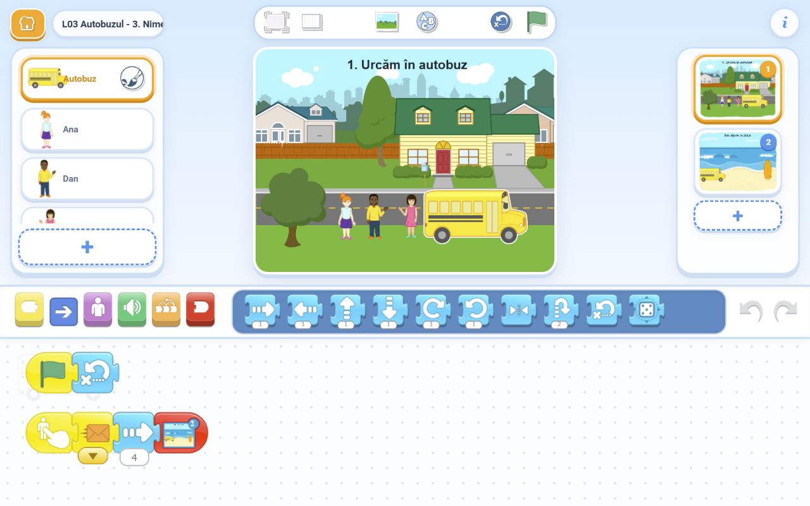

8–20 min
1. Primul pasager
Ana merge până la ușă și dispare în autobuz. Autobuzul rămâne pe loc.
Lecția 03 · 60 de minute
Ana, Dan și Mara vin din locuri diferite. Autobuzul îi așteaptă pe toți, apoi îi duce la plajă. Copiii programează urcarea, călătoria și coborârea după oprire.
Începem cu un pasager și adăugăm treptat scenele și ceilalți copii. Ora include pregătirea, pauza activă și salvarea. Cele două rezerve sunt în plus.
8–20 min
Ana merge până la ușă și dispare în autobuz. Autobuzul rămâne pe loc.
20–33 min
Urcare, plecare, altă scenă, oprire și coborâre. Fără o a doua apăsare a steagului.
36–48 min · dificil
Trei pasageri, distanțe diferite. Autobuzul îi așteaptă pe toți, fără o pauză ghicită.
48–58 min · creație
Altă destinație din bibliotecă, alte trasee de coborâre. Aceleași reguli de călătorie.
Rezervă · +5 min
Mara ajunge ultima. Autobuzul trebuie să o aștepte fără să-i modificăm programul.
Rezervă · +10 min
Ana coboară în parc. Dan și Mara rămân în autobuz până la plajă.
Alegem Bus, trei personaje Child, Suburbs și Beach Day. La creație și a doua rezervă folosim și Park. Nu sunt necesare fișiere de copiat pe tabletele copiilor.
PDF-ul are 15 pagini: un plan concis, pregătire și capturi cu toate programele fiecărui personaj, pentru fiecare scenă. Este ajutor și pentru copiii care se blochează.

Pagina 1 → Stop dacă rulează → Reset Characters → Steag sus → atinge autobuzul o singură dată. Călătoria continuă automat la plajă. Pentru o cursă nouă revino la pagina 1.
Scenă fără cod · SJR · Puzzle-ul greu · SJR · Toate cele șapte proiecte
Ce am testat în browser · Instrucțiuni · PDF-ul cursului · lecțiile 1–3
Ghid online vechi · PDF vechi · Cartonașe vechi · Instrucțiuni vechi · Pachet ZIP vechi.